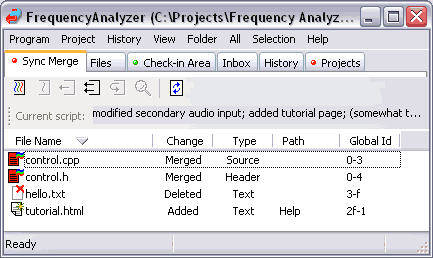

A merge has to be done when you execute an incoming script that modifies a file that you have checked out. When you execute this script, Code Co-op detects the possibility of a conflict and will automatically merge the changes. If, as in most cases, the changes don't overlap, it's a clean merge and you don't have to do anything special. For more complicated merges, you can review the file change-by-change and make edits on the spot. Your edits (including insertions and deletions) as well as the other user's edits will be incorporated in the resulting merged file.
A merge is managed in the Synch Merge tab. Below is an example of what you might see.

Double-clicking on a "Merged" file will launch your preferred merger. Your merger will show you the incoming script changes, your local changes, and the proposed merge. You can review each change and manually modify the merge. Once you are satisfied, save your changes. Later check-in the files in order to propogate your changes.
If you choose to discard your changes (in particular, if you haven't made any changes), do the following: Go to the Check-in area, select the file in question and click on the Un-CheckOut button. You will discard your changes in preparation for the unconditional acceptance of the sync changes.
If the merger discovers actual conflicts between your changes and sync changes (the same line edited in both), it will mark the file with the state "Conflict". You have to perform a manual merge in such case. Double click on the file and make the choices in the visual merger, and then seve them. This will change the status of the file form "Conflict" to "Merged". Note: If you don't review all merge conflicts, you won't be able to close the Sync Merge Tab!
See also: